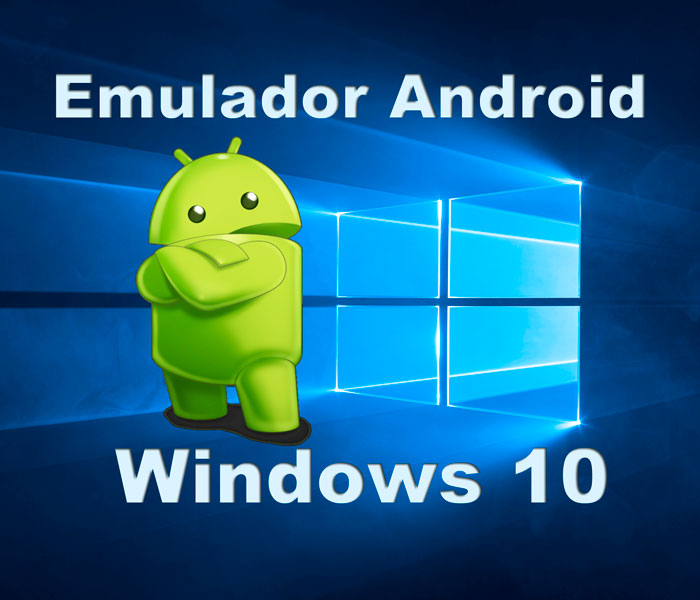
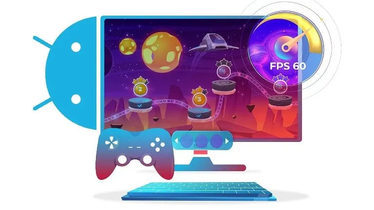
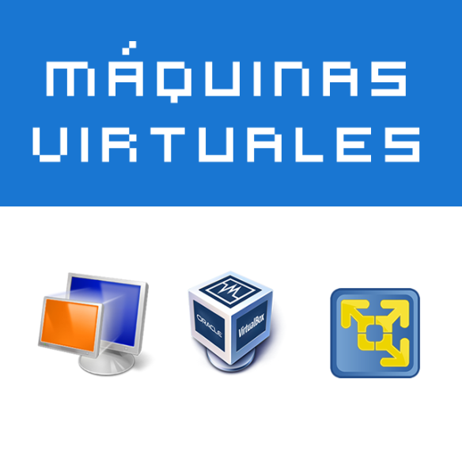

Lautaro Nuñez Spini

¿Que son los emuladores y las maquinas virtuales?
Los avances tecnológicos han permitido que una computadora pueda realizar funciones que anteriormente necesitaban otros dispositivos. Entre estas tecnologías se encuentran los emuladores y las máquinas virtuales, dos herramientas que permiten ejecutar software en entornos diferentes al original.
Aunque pueden parecer conceptos similares, cada uno tiene un funcionamiento y un propósito diferente. Los emuladores buscan reproducir el comportamiento de otro dispositivo o sistema, mientras que las máquinas virtuales permiten crear una computadora virtual dentro de una computadora física.
¿Que es un emulador?
Un emulador es un programa que permite que un dispositivo imite el funcionamiento de otro. Esto hace posible ejecutar programas, aplicaciones o videojuegos que fueron diseñados originalmente para una plataforma diferente.
Por ejemplo, una computadora puede utilizar un emulador para ejecutar software creado originalmente para una consola de videojuegos. El emulador intenta reproducir las características necesarias del dispositivo original para que el programa pueda funcionar.

¿Para que se utilizan?
Los emuladores tienen diferentes usos. Son utilizados para conservar software antiguo, realizar pruebas durante el desarrollo de programas y ejecutar aplicaciones creadas para otras plataformas.
También son conocidos por permitir utilizar videojuegos de sistemas antiguos en computadoras modernas, siempre respetando las leyes y los derechos de autor correspondientes.
Si quieres saber mas sobre los emuladores, aqui te dejo un link con mas informacion: Emuladores - Seon
¿Que es una maquina virtual?
Una máquina virtual es un entorno creado mediante software que funciona como una computadora independiente dentro de otra computadora. Puede tener su propio sistema operativo, programas, archivos y configuraciones.
Por ejemplo, una computadora que utiliza Windows puede crear una máquina virtual en la que se encuentre instalado Linux. De esta manera, ambos sistemas pueden utilizarse en el mismo equipo.

¿Para que se utilizan?
Las máquinas virtuales son muy utilizadas para probar sistemas operativos, experimentar con programas, aprender informática y realizar tareas que requieren un entorno diferente.
También son importantes en empresas y servidores, ya que permiten ejecutar varios sistemas independientes utilizando un mismo equipo físico.
Si quieres saber mas sobre las maquinas virtuales, aqui te dejo un link con mas informacion: Maquinas Virtuales - Red Hat
Emuladores vs. Maquinas Virtuales
Aunque los dos conceptos están relacionados con la virtualización y la ejecución de software en otros entornos, no funcionan exactamente de la misma manera.
| Característica | Emuladores | Máquinas virtuales |
|---|---|---|
| Objetivo | Imitar otro dispositivo o sistema | Crear una computadora virtual |
| Ejemplo | Emular una consola de videojuegos | Ejecutar Linux dentro de Windows |
| Uso principal | Software de otras plataformas | Sistemas operativos y entornos de prueba |
| Rendimiento | Puede ser menor debido a la emulacion | Generalmente mas cercano al hardware real |
| Sistema operativo | No necesariamente necesita otro SO completo | Normalmente ejecuta un SO invitado |
| Recursos | Puede requerir bastante procesamiento | Utiliza una parte de los recursos del equipo |
| Ejemplo de uso | Ejecutar software de una consola antigua | Probar otro sistema operativo |
Ventajas de los emuladores
Ventajas de las maquinas virtuales
Dos tecnologías, diferentes objetivos
La principal diferencia es que un emulador intenta reproducir el funcionamiento de otro dispositivo o arquitectura, mientras que una máquina virtual crea un entorno informático independiente dentro de un equipo físico.
En pocas palabras, un emulador permite que una computadora se comporte como otro dispositivo, mientras que una máquina virtual permite crear otra computadora de manera virtual.
La tecnologia detras de lo virtual
Los emuladores y las máquinas virtuales son herramientas importantes dentro de la informática moderna. Aunque tienen diferentes funciones, ambas permiten aprovechar el software de maneras que no serían posibles utilizando únicamente el hardware original.
Gracias a estas tecnologías es posible experimentar con diferentes sistemas, conservar software antiguo, realizar pruebas y aprender sobre informática sin necesitar numerosos dispositivos físicos.